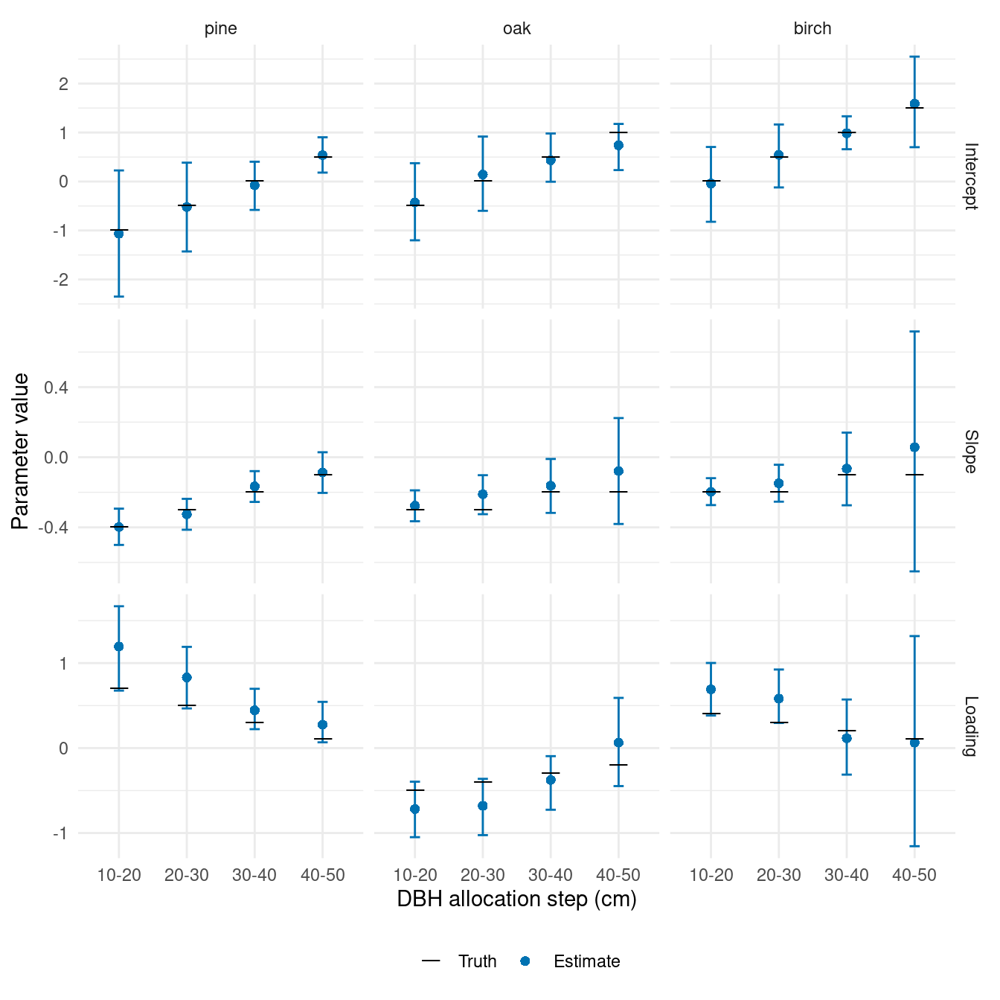
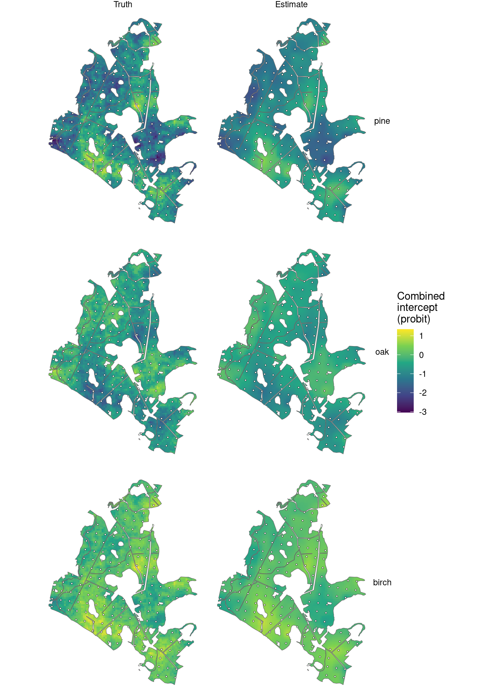
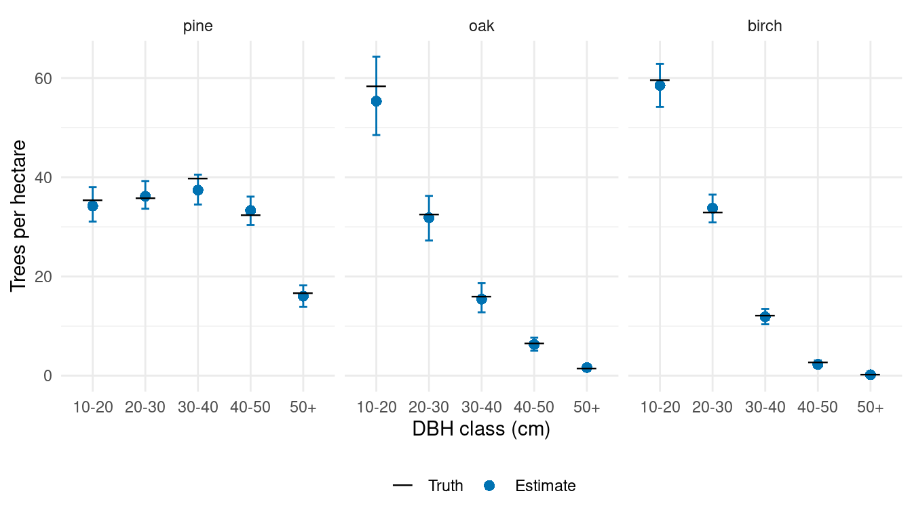
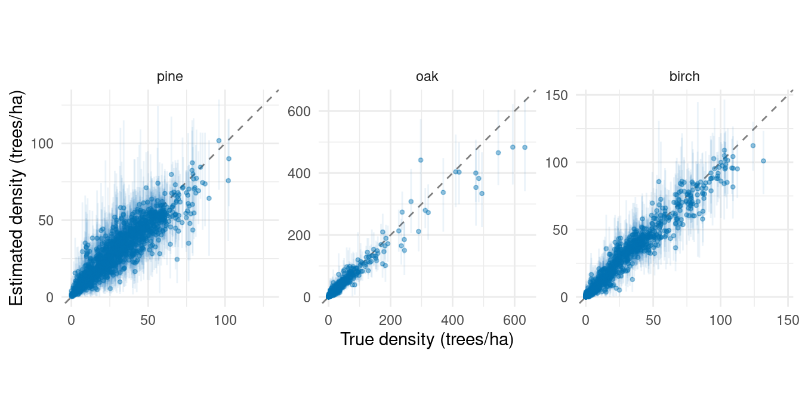

library(magComp)
library(tidyverse)
library(sf)
plots <- read_csv("data/plots.csv")
prediction <- read_csv("data/prediction.csv")
dbh_parameters <- read_csv("data/dbh_parameters.csv")
true_parameters <- read_csv("data/true_parameters.csv", na = "NA")
forest <- st_read("data/forest.gpkg", quiet = TRUE)
prediction_cells <- st_read("data/prediction_cells.gpkg", quiet = TRUE)
plot_locations <- st_read("data/plot_locations.gpkg", quiet = TRUE)
cell_stand_areas <- read_csv("data/cell_stand_areas.csv")
species_order <- c("pine", "oak", "birch")
dbh_classes <- c("10-20", "20-30", "30-40", "40-50", "50+")Random effects in within-species DBH distributions
Source:vignettes/articles/conditional-dbh-effects-plot-sampling.qmd
Forests with similar canopy heights can have different size distributions within the same species. Management history, disturbance, and growing conditions can leave patterns that canopy height alone does not explain. We extend the full plot-sampling model by adding a spatial factor to diameter at breast height (DBH) allocation within species. Magnitude and species allocation remain regression-only models.
The preceding spatial article placed spatial effects in magnitude and species allocation. Here we show how the same machinery describes variation in the conditional DBH distributions. We explain the generating model, fit it, compare parameters and combined intercept maps with truth, and summarize forest and stand densities.
Example data
Download the conditional DBH-example data (ZIP)
Extract it and use the folder containing data/ as your R working directory. The archive includes the generated population, its true parameters and spatial factor, and generate_population.R to reproduce it with seed 1. Generating the population again is optional.
Read the generated population
This example uses the same forest, 151 sampled plots, 4,812 prediction cells, and standardized canopy-height predictor x as the data article, with new simulated counts. We read the data and the generating parameters. Coordinates ending in _km are in kilometers; the polygons and original coordinates are in meters.
The count columns describe the 15 species-by-DBH categories. The w column holds the true spatial factor score at each location, for comparison after fitting. It is not supplied as a covariate.
A shared factor for within-species size distributions
Let index species and index DBH class. The leading allocation assigns trees to species with probabilities . Within species , the child allocation assigns them to DBH classes with probabilities . Their product gives the probability of belonging to species and DBH class .
As in the earlier articles, we allocate trees through the DBH classes in order. Among trees not already assigned to a smaller class, the probability of entering class is
where is the standard Normal distribution function. Each species has four allocation steps; its fifth class receives the remaining trees. The class probabilities are for the first four classes, with the remaining probability assigned to 50+.
There is one spatial factor score at each location, shared by all 12 species-by-DBH allocation steps. Each step has its own loading . Thus a common pattern can affect pine, oak, and birch differently, and can have different effects across their size classes. The loading matrix stacks four rows for each species into a single 12-by-1 matrix. These are not separate factors for each species.
The factor has mean zero, variance one, and exponential correlation . We use , so its correlation falls to approximately 0.05 at 1 km. The loadings determine the scale and direction of each DBH effect. We choose pine:10-20 as the anchor row and constrain its loading to be positive when fitting; its value is estimated along with the other loadings.
The generating coefficients and loadings are given below. A positive factor score increases pine’s and birch’s probabilities of allocation to the first class, while decreasing oak’s. Because later steps act on the remaining trees, a loading describes a conditional allocation, not a change in the overall proportion of that class.
knitr::kable(dbh_parameters, digits = 1,
col.names = c("Species", "DBH class", "Intercept", "Slope", "Loading"))| Species | DBH class | Intercept | Slope | Loading |
|---|---|---|---|---|
| pine | 10-20 | -1.0 | -0.4 | 0.7 |
| pine | 20-30 | -0.5 | -0.3 | 0.5 |
| pine | 30-40 | 0.0 | -0.2 | 0.3 |
| pine | 40-50 | 0.5 | -0.1 | 0.1 |
| oak | 10-20 | -0.5 | -0.3 | -0.5 |
| oak | 20-30 | 0.0 | -0.3 | -0.4 |
| oak | 30-40 | 0.5 | -0.2 | -0.3 |
| oak | 40-50 | 1.0 | -0.2 | -0.2 |
| birch | 10-20 | 0.0 | -0.2 | 0.4 |
| birch | 20-30 | 0.5 | -0.2 | 0.3 |
| birch | 30-40 | 1.0 | -0.1 | 0.2 |
| birch | 40-50 | 1.5 | -0.1 | 0.1 |
Magnitude uses and with size . Species allocation uses the same canopy-height regressions as the full-model article. Neither component has a random effect in this population. We also leave smoothing across DBH classes out of this example.
Generate the population
We generate the factor jointly over the plots and prediction cells from a full Gaussian process (GP). Given that field, we draw total counts, allocate them among species, and allocate each species count among DBH classes. The supplied files contain these completed steps. The optional code below comes from generate_population.R; running that script reproduces them. Full-GP generation requires more memory than reading the supplied files.
Optional code to generate the population
We combine the locations and set the generating parameters.
library(tidyverse)
plots <- read_csv("data/plots.csv") |>
select(plot_id, stand_id, easting, northing, area, p95, x)
prediction <- read_csv("data/prediction.csv") |>
select(plot_id, stand_id, easting, northing, area, p95, x)
locations <- bind_rows(
plots |> mutate(dataset = "plot"),
prediction |> mutate(dataset = "prediction")
) |>
mutate(easting_km = easting / 1000, northing_km = northing / 1000)
beta_0 <- log(350)
beta_1 <- -0.2
size <- 50
phi_w <- 3
species <- c("pine", "oak", "birch")
dbh_classes <- c("10-20", "20-30", "30-40", "40-50", "50+")
alpha_pine <- c(intercept = 0, slope = 0.5)
alpha_oak <- c(intercept = -0.5, slope = -0.5)
# Each row describes one DBH allocation step within one species.
dbh_parameters <- tibble(
species = rep(species, each = 4),
dbh_class = rep(dbh_classes[1:4], times = 3),
intercept = c(-1, -0.5, 0, 0.5,
-0.5, 0, 0.5, 1,
0, 0.5, 1, 1.5),
slope = c(-0.4, -0.3, -0.2, -0.1,
-0.3, -0.3, -0.2, -0.2,
-0.2, -0.2, -0.1, -0.1),
loading = c(0.7, 0.5, 0.3, 0.1,
-0.5, -0.4, -0.3, -0.2,
0.4, 0.3, 0.2, 0.1)
)One GP draw supplies the factor score at every location. Multiplying independent standard Normal draws by the transposed Cholesky factor gives the specified covariance.
We simulate total counts and species allocations, then use the shared spatial scores in each species’ DBH allocations.
# Magnitude and species allocation depend on canopy height alone.
locations <- locations |>
mutate(
expected_density = exp(beta_0 + beta_1 * x),
count = rnbinom(n(), mu = area * expected_density, size = size)
)
pi_pine <- pnorm(alpha_pine[1] + alpha_pine[2] * locations$x)
pi_oak <- pnorm(alpha_oak[1] + alpha_oak[2] * locations$x)
species_counts <- tibble(
pine = rbinom(nrow(locations), locations$count, pi_pine)
)
species_counts$oak <- rbinom(
nrow(locations), locations$count - species_counts$pine, pi_oak
)
species_counts$birch <- locations$count - rowSums(species_counts)
categories <- expand_grid(species = species, dbh_class = dbh_classes) |>
mutate(category = paste(species, dbh_class, sep = ":"))
counts <- matrix(0L, nrow = nrow(locations), ncol = nrow(categories),
dimnames = list(NULL, categories$category))
for (s in species) {
coefficients <- dbh_parameters |> filter(species == s)
remaining <- species_counts[[s]]
for (b in 1:4) {
probability <- pnorm(coefficients$intercept[b] +
coefficients$slope[b] * locations$x +
coefficients$loading[b] * locations$w)
category <- paste(s, dbh_classes[b], sep = ":")
counts[, category] <- rbinom(nrow(locations), remaining, probability)
remaining <- remaining - counts[, category]
}
counts[, paste(s, "50+", sep = ":")] <- remaining
}Fit the conditional spatial model
We arrange the sampled counts into one row per plot, species, and DBH class. This is the same data structure as for the full model.
trees <- plots |>
select(plot_id, area, x, easting_km, northing_km, contains(":")) |>
pivot_longer(contains(":"), names_to = c("species", "dbh_class"),
names_sep = ":", values_to = "count") |>
mutate(
species = factor(species, levels = species_order),
dbh_class = ordered(dbh_class, levels = dbh_classes)
) |>
arrange(plot_id, species, dbh_class)
dat <- magCompData(
trees,
unit = plot_id, categories = c(species, dbh_class),
tree_count = count, design = fixedArea(area)
)We approximate the GP with a 15-neighbor nearest-neighbor Gaussian process (NNGP) (Datta et al. 2016). The factor_nngp() term belongs in dbh_class | species, so it modifies DBH allocation within species. factor_names = "size" labels this factor in the parameter output.
fit <- magComp(
dat,
magnitude = ~ x,
composition = magCompComposition(
species ~ x,
dbh_class | species ~ x +
factor_nngp(easting_km, northing_km, K = 1, m = 15,
anchors = "pine:10-20", factor_names = "size", name = "space")
),
control = magCompControl(
n_samples = 50000,
n_burn = 20000,
n_thin = 10,
n_chains = 3,
n_cores = 3,
chain_seeds = 1:3,
verbose = FALSE
)
)The conditional DBH factor can be harder to estimate than a species-allocation factor because it has more loadings and relies on smaller within-species counts, especially in later DBH classes. We therefore use longer chains here.
Each chain runs for 50,000 iterations. We discard the first 20,000 and retain every tenth draw, giving 3,000 retained draws per chain. The model estimates the DBH factor’s decay and loadings using default priors and automatic starting values. Negative-binomial size is also estimated because the magnitude model has no random effect.
Compare parameters and inspect mixing
We first compare the magnitude and species coefficients, size, and spatial decay with their generating values. The remaining parameters describe the conditional DBH model and are plotted below.
parameter_summary <- summary(fit)
parameter_summary |>
inner_join(true_parameters, by = c("component", "block", "parameter", "index")) |>
select(symbol, truth, mean, q2_5, q97_5, rhat, ess) |>
knitr::kable(digits = 3,
col.names = c("Parameter", "Truth", "Mean", "2.5%", "97.5%", "R-hat", "ESS"))| Parameter | Truth | Mean | 2.5% | 97.5% | R-hat | ESS |
|---|---|---|---|---|---|---|
| beta[0] | 5.858 | 5.854 | 5.821 | 5.887 | 1.000 | 9000.000 |
| beta[x] | -0.200 | -0.182 | -0.215 | -0.150 | 1.000 | 8745.218 |
| r_M | 50.000 | 58.516 | 34.591 | 101.641 | 1.000 | 7844.793 |
| alpha[0,pine] | 0.000 | -0.018 | -0.050 | 0.014 | 1.001 | 8521.705 |
| alpha[x,pine] | 0.500 | 0.482 | 0.448 | 0.516 | 1.000 | 8763.774 |
| alpha[0,oak] | -0.500 | -0.510 | -0.563 | -0.457 | 1.000 | 8787.215 |
| alpha[x,oak] | -0.500 | -0.521 | -0.569 | -0.473 | 1.000 | 8588.459 |
| phi_w[size] | 3.000 | 0.856 | 0.381 | 2.494 | 1.003 | 150.731 |
The decay is estimated below its generating value in this realization, corresponding to longer spatial dependence. Its chains agree well, but the 95% interval does not include the generating value. Good chain agreement does not guarantee that an interval contains the truth; a single simulated forest does not establish interval coverage.
We match each DBH coefficient or loading to its generating value. The index identifies species, DBH allocation step, and either a regression coefficient or the named factor.
dbh_truth <- dbh_parameters |>
pivot_longer(c(intercept, slope, loading), names_to = "coefficient", values_to = "truth") |>
mutate(
parameter = if_else(coefficient == "loading", "loadings", "coefficients"),
index = paste(species, dbh_class,
recode(coefficient, intercept = "(Intercept)", slope = "x", loading = "size"),
sep = ":")
)
dbh_comparison <- parameter_summary |>
filter(block == "dbh_class|species") |>
inner_join(dbh_truth, by = c("parameter", "index")) |>
mutate(
species = factor(species, levels = species_order),
dbh_class = ordered(dbh_class, levels = dbh_classes[1:4]),
coefficient = factor(coefficient, levels = c("intercept", "slope", "loading"),
labels = c("Intercept", "Slope", "Loading"))
)
ggplot(dbh_comparison, aes(dbh_class, mean)) +
geom_errorbar(aes(ymin = q2_5, ymax = q97_5), width = 0.15, color = "#0072B2") +
geom_point(aes(shape = "Estimate"), color = "#0072B2", size = 2) +
geom_point(aes(y = truth, shape = "Truth"), size = 5) +
scale_shape_manual(values = c("Truth" = 95, "Estimate" = 16),
breaks = c("Truth", "Estimate"), name = NULL) +
facet_grid(coefficient ~ species, scales = "free_y") +
labs(x = "DBH allocation step (cm)", y = "Parameter value") +
theme_minimal() +
theme(legend.position = "bottom")
The larger loadings are positive for pine and birch and negative for oak, as specified in the population. Later birch classes contain fewer trees and have wider intervals. We summarize chain agreement separately for the DBH intercepts, slopes, and loadings.
dbh_comparison |>
group_by(coefficient) |>
summarise(max_rhat = max(rhat), min_ess = min(ess), .groups = "drop") |>
knitr::kable(digits = 3,
col.names = c("Coefficient", "Largest R-hat", "Smallest ESS"))| Coefficient | Largest R-hat | Smallest ESS |
|---|---|---|
| Intercept | 1.245 | 26.243 |
| Slope | 1.001 | 4926.938 |
| Loading | 1.005 | 136.470 |
The slopes and loadings have R-hats close to one, while the separate intercepts mix slowly despite the longer chains. An intercept and the factor contribution can trade off while leaving their sum nearly unchanged. In traceplots, the intercepts and average factor contribution would move in opposite directions while their sums remain more stable.
For DBH step within species , that combined intercept is . It describes allocation on the probit scale at average canopy height. We check these sums averaged over the observed plot locations, using all retained draws. The table reports the largest R-hat and smallest effective sample size (ESS) across the four DBH steps for each species.
combined_diagnostics <- summary(fit, type = "combined", group = ".all")
combined_diagnostics |>
group_by(parent) |>
summarise(max_rhat = max(rhat), min_ess = min(ess), .groups = "drop") |>
knitr::kable(digits = 3,
col.names = c("Species", "Largest R-hat", "Smallest ESS"))| Species | Largest R-hat | Smallest ESS |
|---|---|---|
| birch | 1 | 5899.720 |
| oak | 1 | 7057.729 |
| pine | 1 | 7563.821 |
The averaged combined intercepts have R-hats near one and much larger ESS. These diagnostics describe the sums; the separate intercept summaries retain their mixing limitations. The maps below show the combined intercepts, which enter the allocation probabilities directly.
Predict across the forest
We predict all cells together, retaining 100 draws per chain. Each draw includes a spatial factor realization conditional on the fitted effects and previously generated prediction effects. The observation target then generates total counts and their species-by-DBH allocations; type = "density" divides those counts by each cell’s area. We keep the same latent draws for the combined-intercept maps.
Map the first DBH allocation step
We map the combined intercept for the 10–20 cm class in each species. Higher values mean a greater probability of entering this class at average canopy height. The three maps share one spatial factor but differ through their intercepts and loadings.
intercept_summary <- summary(samples(predictions, type = "combined")) |>
filter(stick %in% paste(species_order, "10-20", sep = ":")) |>
transmute(plot_id = as.integer(unit), species = parent, Estimate = mean)
true_intercepts <- prediction |>
select(plot_id, w) |>
cross_join(filter(dbh_parameters, dbh_class == "10-20")) |>
transmute(plot_id, species, Truth = intercept + loading * w)
map_values <- intercept_summary |>
left_join(true_intercepts, by = c("plot_id", "species")) |>
pivot_longer(c(Truth, Estimate), names_to = "source", values_to = "intercept") |>
mutate(species = factor(species, levels = species_order),
source = factor(source, levels = c("Truth", "Estimate")))
intercept_maps <- prediction_cells |>
left_join(map_values, by = "plot_id", relationship = "many-to-many")
ggplot(intercept_maps) +
geom_sf(aes(fill = intercept), color = NA) +
geom_sf(data = forest, fill = NA, color = "grey40", linewidth = 0.2) +
geom_sf(data = plot_locations, shape = 21, fill = "white", size = 0.7, stroke = 0.2) +
facet_grid(species ~ source) +
scale_fill_viridis_c(name = "Combined\nintercept\n(probit)") +
coord_sf(datum = NA) +
theme_void()
Opposite loading signs give oak a different spatial pattern from pine and birch. Posterior means smooth over uncertainty between sampled plots; the predictive samples retain that uncertainty when summarizing densities.
Compare forest and stand densities with truth
We use the same area-weighted aggregation as in the previous articles. standSummary() combines the predictive densities into one forest density per species-by-DBH category in each draw.
forest_predictions <- standSummary(
predictions,
data = prediction,
unit = plot_id,
represented_area = area,
summary = "samples"
)
forest_truth <- prediction |>
select(contains(":")) |>
pivot_longer(everything(), names_to = "category", values_to = "count") |>
group_by(category) |>
summarise(truth = sum(count) / sum(prediction$area), .groups = "drop")
forest_comparison <- summary(forest_predictions) |>
as_tibble() |>
left_join(forest_truth, by = "category") |>
separate_wider_delim(category, delim = ":", names = c("species", "dbh_class")) |>
mutate(species = factor(species, levels = species_order),
dbh_class = ordered(dbh_class, levels = dbh_classes))
ggplot(forest_comparison, aes(dbh_class, mean)) +
geom_errorbar(aes(ymin = q2_5, ymax = q97_5), width = 0.15, color = "#0072B2") +
geom_point(aes(shape = "Estimate"), color = "#0072B2", size = 2.5) +
geom_point(aes(y = truth, shape = "Truth"), size = 6) +
scale_shape_manual(values = c("Truth" = 95, "Estimate" = 16),
breaks = c("Truth", "Estimate"), name = NULL) +
facet_wrap(~ species, nrow = 1) +
scale_y_continuous(limits = c(0, NA)) +
labs(x = "DBH class (cm)", y = "Trees per hectare") +
theme_minimal() +
theme(legend.position = "bottom")
For stands, we supply the cell–stand area table from the data article. Both truth and prediction use a cell’s density in every intersected stand, weighted by the area of that intersection.
stand_predictions <- standSummary(
predictions,
data = cell_stand_areas,
unit = prediction_id,
group = stand_id,
represented_area = area_ha,
summary = "samples"
)
stand_truth <- prediction |>
select(plot_id, area, contains(":")) |>
pivot_longer(contains(":"), names_to = "category", values_to = "count") |>
inner_join(cell_stand_areas, by = c("plot_id" = "prediction_id"),
relationship = "many-to-many") |>
group_by(stand_id, category) |>
summarise(truth = weighted.mean(count / area, area_ha), .groups = "drop")
stand_comparison <- summary(stand_predictions) |>
as_tibble() |>
rename(stand_id = unit) |>
left_join(stand_truth, by = c("stand_id", "category")) |>
separate_wider_delim(category, delim = ":", names = c("species", "dbh_class")) |>
mutate(species = factor(species, levels = species_order))
stand_limits <- stand_comparison |>
group_by(species) |>
summarise(limit = max(truth, mean, q97_5), .groups = "drop")Each point below is one species-by-DBH density in one of the 249 stands. Prediction combines canopy height, the shared spatial factor, and its species-by-DBH loadings before aggregation.
ggplot(stand_comparison, aes(truth, mean)) +
geom_blank(data = stand_limits, aes(x = limit, y = limit)) +
geom_abline(intercept = 0, slope = 1, linetype = "dashed", color = "grey50") +
geom_errorbar(aes(ymin = q2_5, ymax = q97_5), width = 0,
color = "#0072B2", alpha = 0.08) +
geom_point(color = "#0072B2", size = 0.9, alpha = 0.4) +
facet_wrap(~ species, nrow = 1, scales = "free") +
scale_x_continuous(limits = c(0, NA)) +
scale_y_continuous(limits = c(0, NA)) +
labs(x = "True density (trees/ha)", y = "Estimated density (trees/ha)") +
theme_minimal() +
theme(aspect.ratio = 1)
A stratum alternative
If within-species size distributions vary among known groups of stands, we can replace the spatial factor with a stratum factor. With units assigned to strata as in the stratum article, the composition specification would be
stratum_composition <- magCompComposition(
species ~ x,
dbh_class | species ~ x +
factor_iid(stratum_id, K = 1, anchors = "pine:10-20",
factor_names = "size", name = "stratum")
)This specifies a separate model to fit to data containing stratum_id. One unit-variance score is shared within each stratum, and the 12 loading rows again allow different responses among species and DBH allocation steps. The spatial model instead shares information through distance. Either choice uses the same predict() and standSummary() workflow.
The space-time article turns to repeated plot measurements, adding temporal dependence to spatial effects in magnitude and species allocation.
References
Datta, Abhirup, Sudipto Banerjee, Andrew O. Finley, and Alan E. Gelfand. 2016. “Hierarchical Nearest-Neighbor Gaussian Process Models for Large Geostatistical Datasets.” Journal of the American Statistical Association 111 (514): 800–812. https://doi.org/10.1080/01621459.2015.1044091.